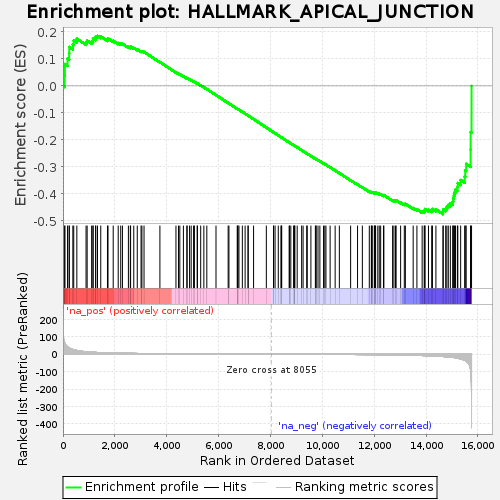
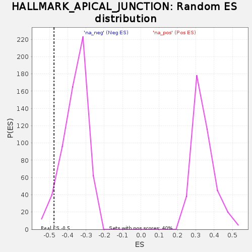

| | | Dataset | DiseaseStatus_ctr_vs_case |
| Phenotype | NoPhenotypeAvailable |
| Upregulated in class | na_neg |
| GeneSet | HALLMARK_APICAL_JUNCTION |
| Enrichment Score (ES) | -0.474934 |
| Normalized Enrichment Score (NES) | -1.3201264 |
| Nominal p-value | 0.053511705 |
| FDR q-value | 0.15917327 |
| FWER p-Value | 0.885 |
Table: GSEA Results Summary

Fig 1: Enrichment plot: HALLMARK_APICAL_JUNCTION
Profile of the Running ES Score & Positions of GeneSet Members on the Rank Ordered List
| SYMBOL | RANK IN GENE LIST | RANK METRIC SCORE | RUNNING ES | CORE ENRICHMENT | | 1 | PCDH1 | 64 | 66.055 | 0.0394 | No |
| 2 | LAMB3 | 73 | 63.569 | 0.0808 | No |
| 3 | MYH9 | 175 | 41.224 | 0.1014 | No |
| 4 | MSN | 238 | 35.866 | 0.1211 | No |
| 5 | MPZL2 | 242 | 35.317 | 0.1442 | No |
| 6 | SHC1 | 380 | 27.183 | 0.1533 | No |
| 7 | GTF2F1 | 414 | 25.784 | 0.1682 | No |
| 8 | ACTG1 | 534 | 21.553 | 0.1747 | No |
| 9 | ADAM23 | 889 | 14.168 | 0.1614 | No |
| 10 | PVRL1 | 931 | 13.576 | 0.1677 | No |
| 11 | PFN1 | 1104 | 11.821 | 0.1645 | No |
| 12 | AMH | 1156 | 11.292 | 0.1686 | No |
| 13 | DHX16 | 1160 | 11.234 | 0.1758 | No |
| 14 | PTK2 | 1259 | 10.379 | 0.1764 | No |
| 15 | SYMPK | 1262 | 10.350 | 0.1831 | No |
| 16 | ACTN4 | 1330 | 9.763 | 0.1852 | No |
| 17 | ACTB | 1456 | 8.906 | 0.1831 | No |
| 18 | PTPRC | 1715 | 7.689 | 0.1716 | No |
| 19 | CDK8 | 1736 | 7.586 | 0.1753 | No |
| 20 | CLDN15 | 1936 | 6.759 | 0.1671 | No |
| 21 | ADAM15 | 2129 | 6.063 | 0.1588 | No |
| 22 | VASP | 2226 | 5.751 | 0.1564 | No |
| 23 | NFASC | 2292 | 5.570 | 0.1559 | No |
| 24 | KCNH2 | 2522 | 4.974 | 0.1445 | No |
| 25 | PVRL3 | 2596 | 4.832 | 0.1430 | No |
| 26 | MMP9 | 2607 | 4.797 | 0.1455 | No |
| 27 | ITGA10 | 2729 | 4.516 | 0.1408 | No |
| 28 | CD86 | 2864 | 4.187 | 0.1349 | No |
| 29 | STX4 | 3010 | 3.895 | 0.1282 | No |
| 30 | CD274 | 3043 | 3.821 | 0.1287 | No |
| 31 | LAYN | 3125 | 3.670 | 0.1259 | No |
| 32 | AMIGO2 | 3737 | 2.728 | 0.0886 | No |
| 33 | LDLRAP1 | 4356 | 1.994 | 0.0503 | No |
| 34 | JAM3 | 4453 | 1.894 | 0.0454 | No |
| 35 | NEXN | 4505 | 1.835 | 0.0433 | No |
| 36 | NLGN3 | 4643 | 1.722 | 0.0357 | No |
| 37 | TUBG1 | 4781 | 1.602 | 0.0280 | No |
| 38 | ATP1A3 | 4782 | 1.602 | 0.0290 | No |
| 39 | ZAK | 4881 | 1.532 | 0.0238 | No |
| 40 | EPB41L2 | 4943 | 1.472 | 0.0208 | No |
| 41 | ZYX | 5035 | 1.397 | 0.0159 | No |
| 42 | MPP5 | 5068 | 1.371 | 0.0148 | No |
| 43 | MAPK11 | 5176 | 1.303 | 0.0088 | No |
| 44 | TSC1 | 5182 | 1.298 | 0.0093 | No |
| 45 | NEGR1 | 5310 | 1.207 | 0.0020 | No |
| 46 | B4GALT1 | 5432 | 1.115 | -0.0050 | No |
| 47 | MYL9 | 5546 | 1.037 | -0.0116 | No |
| 48 | PKD1 | 5900 | 0.818 | -0.0337 | No |
| 49 | HRAS | 6369 | 0.595 | -0.0633 | No |
| 50 | TRO | 6399 | 0.579 | -0.0647 | No |
| 51 | GRB7 | 6719 | 0.441 | -0.0849 | No |
| 52 | PIK3R3 | 6734 | 0.435 | -0.0855 | No |
| 53 | ARHGEF6 | 6745 | 0.428 | -0.0858 | No |
| 54 | CNN2 | 6785 | 0.413 | -0.0881 | No |
| 55 | TIAL1 | 6916 | 0.369 | -0.0961 | No |
| 56 | IKBKG | 7023 | 0.327 | -0.1027 | No |
| 57 | FSCN1 | 7137 | 0.286 | -0.1098 | No |
| 58 | LIMA1 | 7140 | 0.284 | -0.1097 | No |
| 59 | ACTA1 | 7349 | 0.211 | -0.1229 | No |
| 60 | JUP | 7841 | 0.047 | -0.1543 | No |
| 61 | LAMA3 | 8119 | -0.019 | -0.1720 | No |
| 62 | CTNNA1 | 8121 | -0.020 | -0.1721 | No |
| 63 | VAV2 | 8178 | -0.043 | -0.1757 | No |
| 64 | ACTN1 | 8302 | -0.096 | -0.1835 | No |
| 65 | VWF | 8404 | -0.130 | -0.1898 | No |
| 66 | CDH15 | 8427 | -0.135 | -0.1912 | No |
| 67 | SGCE | 8434 | -0.137 | -0.1915 | No |
| 68 | ICAM5 | 8724 | -0.239 | -0.2098 | No |
| 69 | ITGB1 | 8730 | -0.241 | -0.2100 | No |
| 70 | TAOK2 | 8785 | -0.262 | -0.2133 | No |
| 71 | AMIGO1 | 8894 | -0.309 | -0.2200 | No |
| 72 | CLDN11 | 8918 | -0.318 | -0.2212 | No |
| 73 | NF1 | 8920 | -0.319 | -0.2211 | No |
| 74 | WASL | 8942 | -0.330 | -0.2222 | No |
| 75 | SDC3 | 9031 | -0.365 | -0.2276 | No |
| 76 | ITGA9 | 9203 | -0.434 | -0.2383 | No |
| 77 | EXOC4 | 9259 | -0.460 | -0.2415 | No |
| 78 | CLDN14 | 9399 | -0.525 | -0.2501 | No |
| 79 | AKT2 | 9418 | -0.535 | -0.2509 | No |
| 80 | MAPK14 | 9560 | -0.594 | -0.2595 | No |
| 81 | SHROOM2 | 9732 | -0.675 | -0.2700 | No |
| 82 | COL16A1 | 9755 | -0.688 | -0.2710 | No |
| 83 | GNAI2 | 9759 | -0.691 | -0.2707 | No |
| 84 | RSU1 | 9834 | -0.734 | -0.2750 | No |
| 85 | NLGN2 | 9906 | -0.769 | -0.2790 | No |
| 86 | SLIT2 | 10047 | -0.851 | -0.2874 | No |
| 87 | GNAI1 | 10096 | -0.884 | -0.2899 | No |
| 88 | ITGB4 | 10140 | -0.913 | -0.2921 | No |
| 89 | CTNND1 | 10301 | -1.008 | -0.3016 | No |
| 90 | RHOF | 10495 | -1.145 | -0.3132 | No |
| 91 | PARD6G | 10657 | -1.244 | -0.3227 | No |
| 92 | CERCAM | 11092 | -1.626 | -0.3495 | No |
| 93 | SYK | 11359 | -1.877 | -0.3653 | No |
| 94 | YWHAH | 11544 | -2.041 | -0.3757 | No |
| 95 | CD99 | 11812 | -2.340 | -0.3913 | No |
| 96 | PIK3CB | 11892 | -2.452 | -0.3947 | No |
| 97 | CD276 | 11895 | -2.455 | -0.3932 | No |
| 98 | PLCG1 | 11943 | -2.510 | -0.3946 | No |
| 99 | HADH | 12014 | -2.624 | -0.3973 | No |
| 100 | TJP1 | 12019 | -2.625 | -0.3959 | No |
| 101 | MDK | 12037 | -2.649 | -0.3952 | No |
| 102 | CRB3 | 12055 | -2.672 | -0.3945 | No |
| 103 | RAC2 | 12140 | -2.810 | -0.3981 | No |
| 104 | ITGA2 | 12196 | -2.897 | -0.3997 | No |
| 105 | ICAM2 | 12250 | -2.986 | -0.4011 | No |
| 106 | CAP1 | 12359 | -3.174 | -0.4059 | No |
| 107 | SKAP2 | 12374 | -3.200 | -0.4047 | No |
| 108 | EVL | 12710 | -3.887 | -0.4236 | No |
| 109 | TSPAN4 | 12761 | -3.982 | -0.4242 | No |
| 110 | ICAM4 | 12821 | -4.112 | -0.4253 | No |
| 111 | GAMT | 12846 | -4.171 | -0.4241 | No |
| 112 | MPZL1 | 13020 | -4.607 | -0.4321 | No |
| 113 | ITGA3 | 13162 | -4.945 | -0.4379 | No |
| 114 | NF2 | 13203 | -5.048 | -0.4371 | No |
| 115 | NRTN | 13504 | -5.984 | -0.4524 | No |
| 116 | FBN1 | 13648 | -6.554 | -0.4572 | No |
| 117 | DLG1 | 13850 | -7.485 | -0.4652 | No |
| 118 | TRAF1 | 13929 | -7.851 | -0.4650 | No |
| 119 | RASA1 | 13950 | -7.958 | -0.4610 | No |
| 120 | ARPC2 | 13959 | -7.998 | -0.4563 | No |
| 121 | MAP4K2 | 14094 | -8.723 | -0.4591 | No |
| 122 | VCL | 14219 | -9.526 | -0.4608 | No |
| 123 | PTEN | 14247 | -9.747 | -0.4561 | No |
| 124 | ICAM1 | 14381 | -10.695 | -0.4576 | No |
| 125 | IRS1 | 14653 | -13.056 | -0.4663 | Yes |
| 126 | SORBS3 | 14663 | -13.207 | -0.4582 | Yes |
| 127 | ADAM9 | 14758 | -14.378 | -0.4548 | Yes |
| 128 | THBS3 | 14802 | -14.892 | -0.4477 | Yes |
| 129 | TMEM8B | 14858 | -15.649 | -0.4409 | Yes |
| 130 | RRAS | 14937 | -16.843 | -0.4348 | Yes |
| 131 | AKT3 | 15030 | -18.195 | -0.4287 | Yes |
| 132 | PBX2 | 15047 | -18.475 | -0.4176 | Yes |
| 133 | INPPL1 | 15073 | -18.973 | -0.4067 | Yes |
| 134 | CRAT | 15094 | -19.410 | -0.3952 | Yes |
| 135 | BMP1 | 15135 | -20.461 | -0.3843 | Yes |
| 136 | MYL12B | 15209 | -22.386 | -0.3742 | Yes |
| 137 | MYH10 | 15225 | -23.062 | -0.3600 | Yes |
| 138 | SIRPA | 15335 | -27.378 | -0.3489 | Yes |
| 139 | MAPK13 | 15491 | -35.129 | -0.3357 | Yes |
| 140 | SRC | 15512 | -36.697 | -0.3128 | Yes |
| 141 | CNTN1 | 15548 | -39.578 | -0.2890 | Yes |
| 142 | PECAM1 | 15719 | -97.232 | -0.2359 | Yes |
| 143 | MVD | 15721 | -98.082 | -0.1713 | Yes |
| 144 | INSIG1 | 15755 | -263.451 | 0.0001 | Yes |
Table: GSEA details [plain text format]

Fig 2: HALLMARK_APICAL_JUNCTION: Random ES distribution
Gene set null distribution of ES for HALLMARK_APICAL_JUNCTION